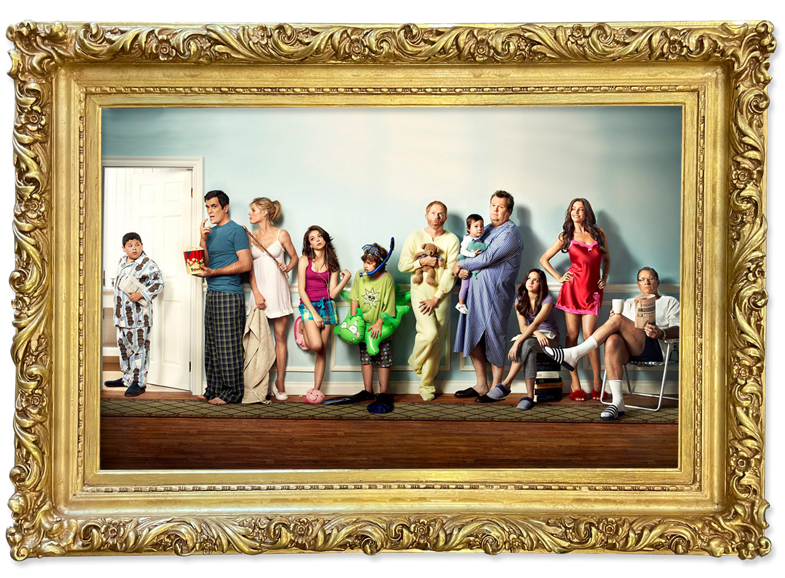
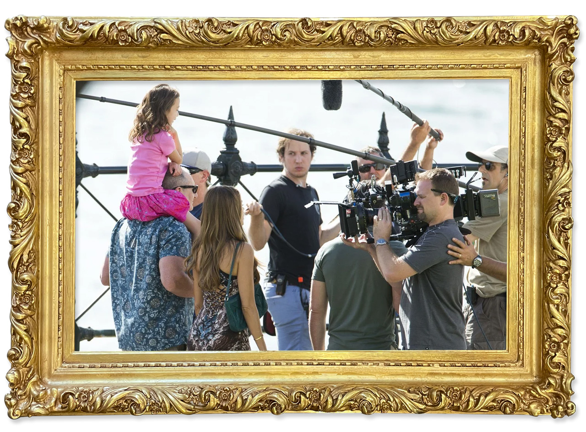
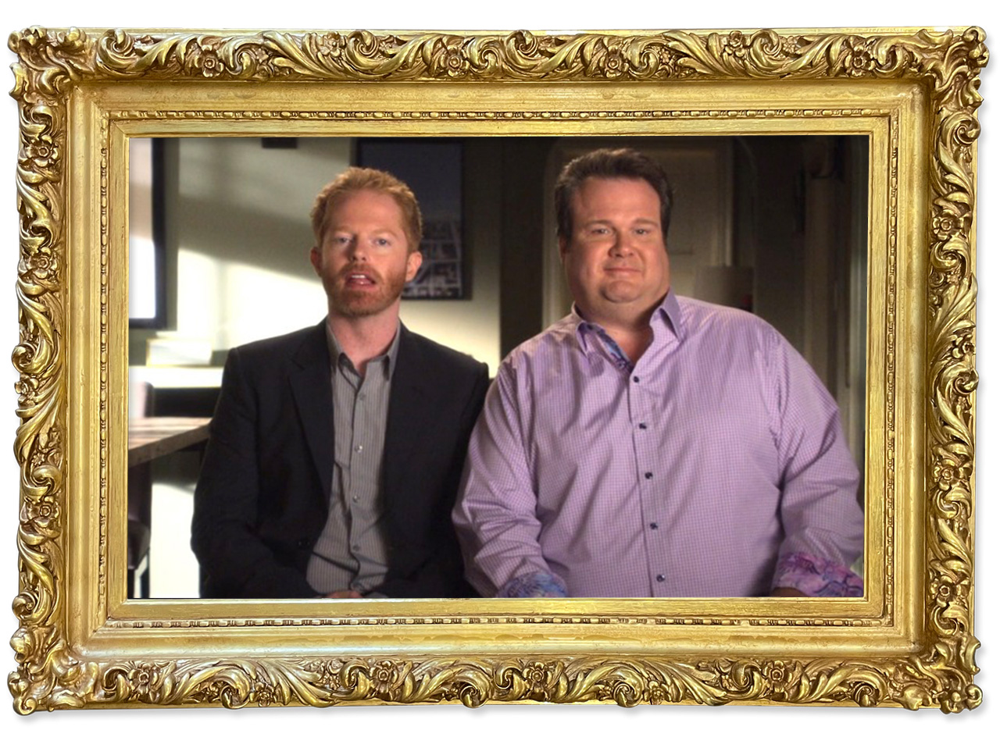
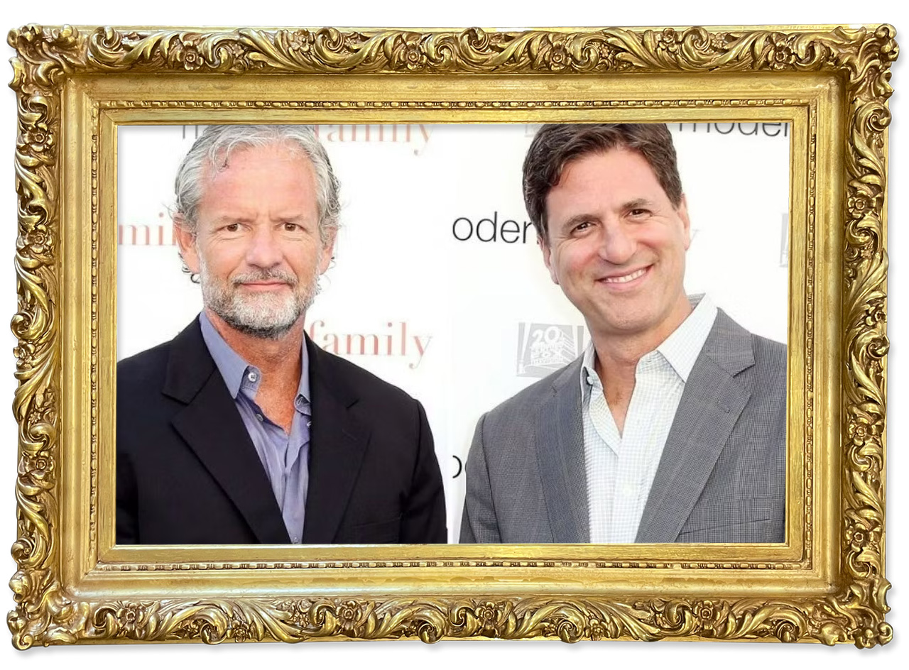

background
modern family is a mockumentary-style sitcom that follows the lives of 3 interconnected families navigating love, chaos, and everyday absurdity. Set in suburban Los Angeles, the show blends sharp humor with heartfelt moments as it explores relationships across generations. Through quick-witted interviews and relatable scenarios, it captures the complexities of modern family life.

show-run
the show ran for 11 seasons from 2009 to 2020, with a total of 250 episodes. Most seasons contain 22–24 episodes, each running about 20–25 minutes. Over its decade-long run, the show became one of television’s most popular and award-winning sitcoms.

genre
the show falls into the ‘mockumentary’ genre, using a documentary-style format to tell fictional stories, where characters speak directly to the camera in interview-style segments. The show mimics a reality show in it’s handheld camera movements and lack of a laugh track.

creation
Modern Family's creators, Christopher Lloyd and Steven Levitan, drew on their own family experiences to shape the show’s characters and storylines.

watch
you can watch Modern Family on HULU with a subscription